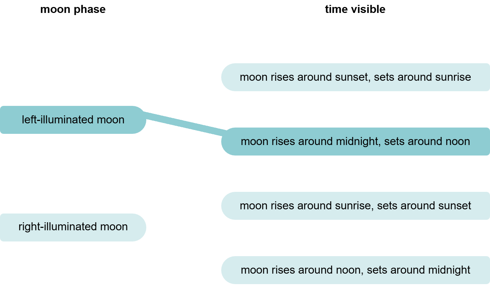
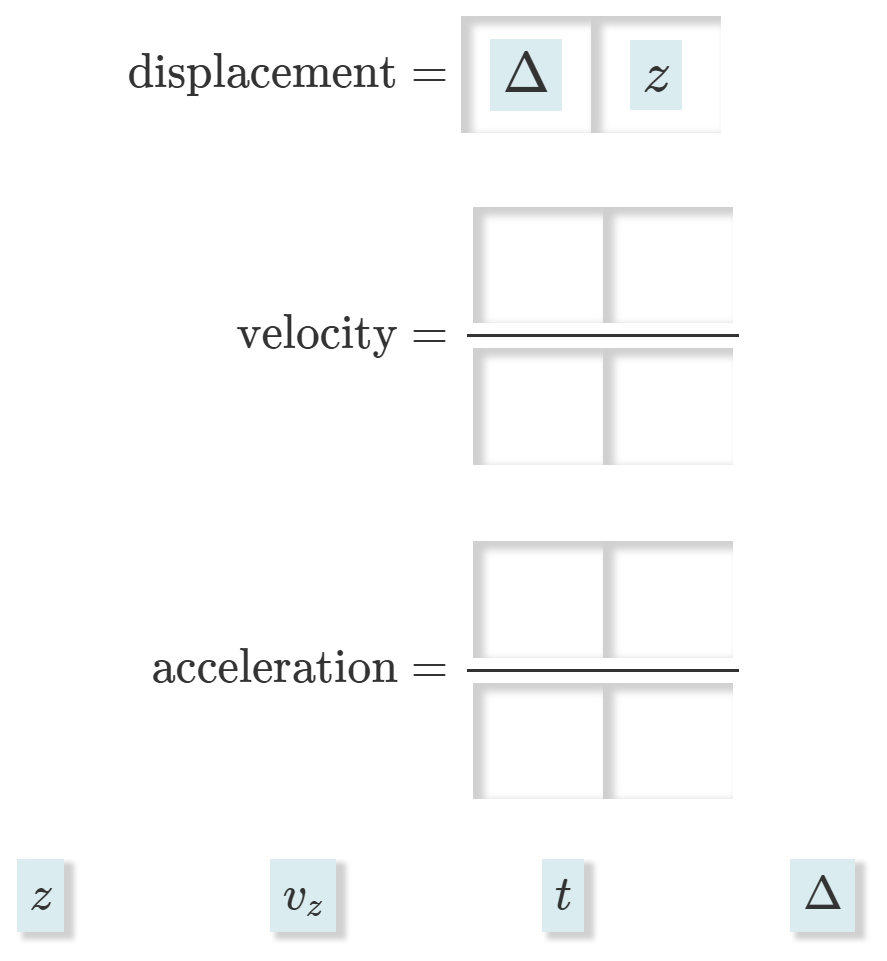
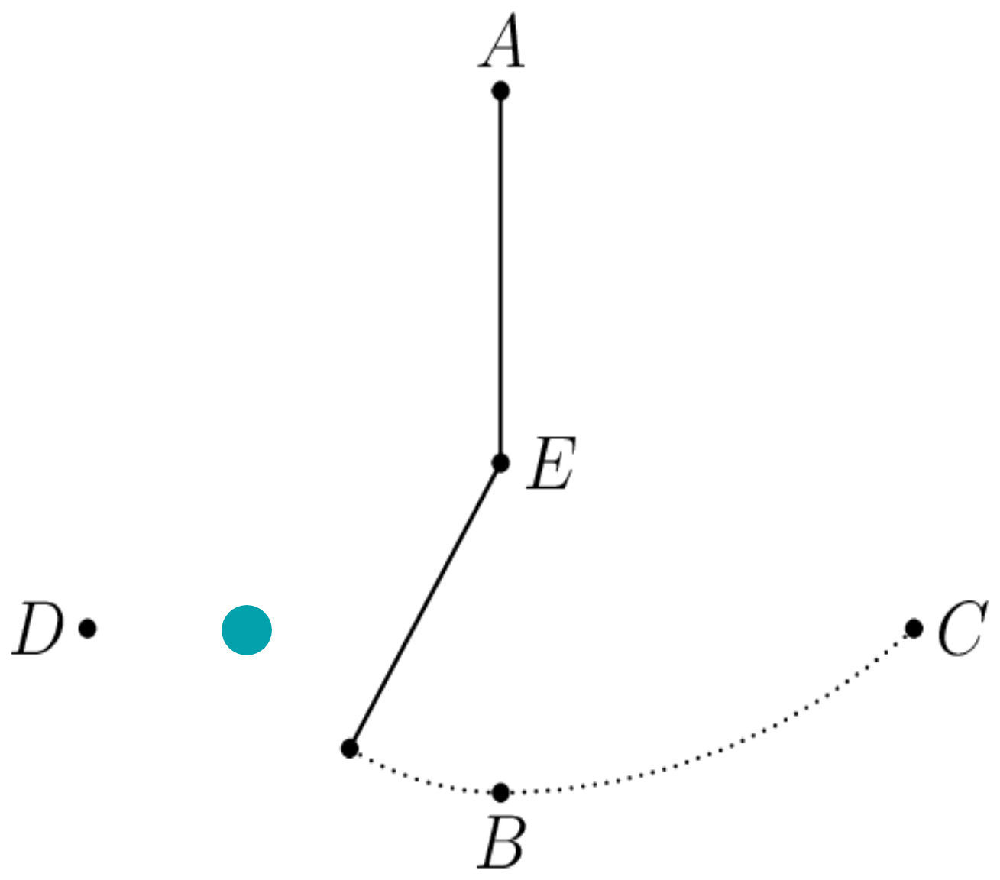
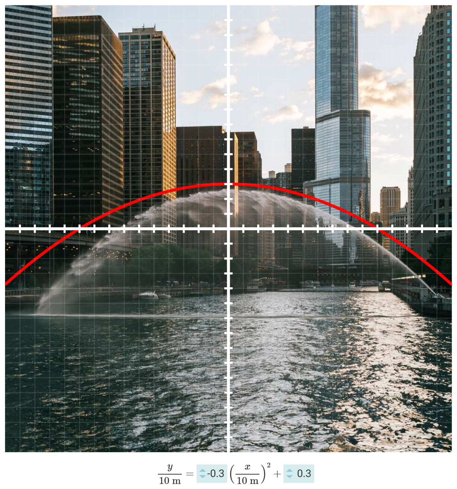
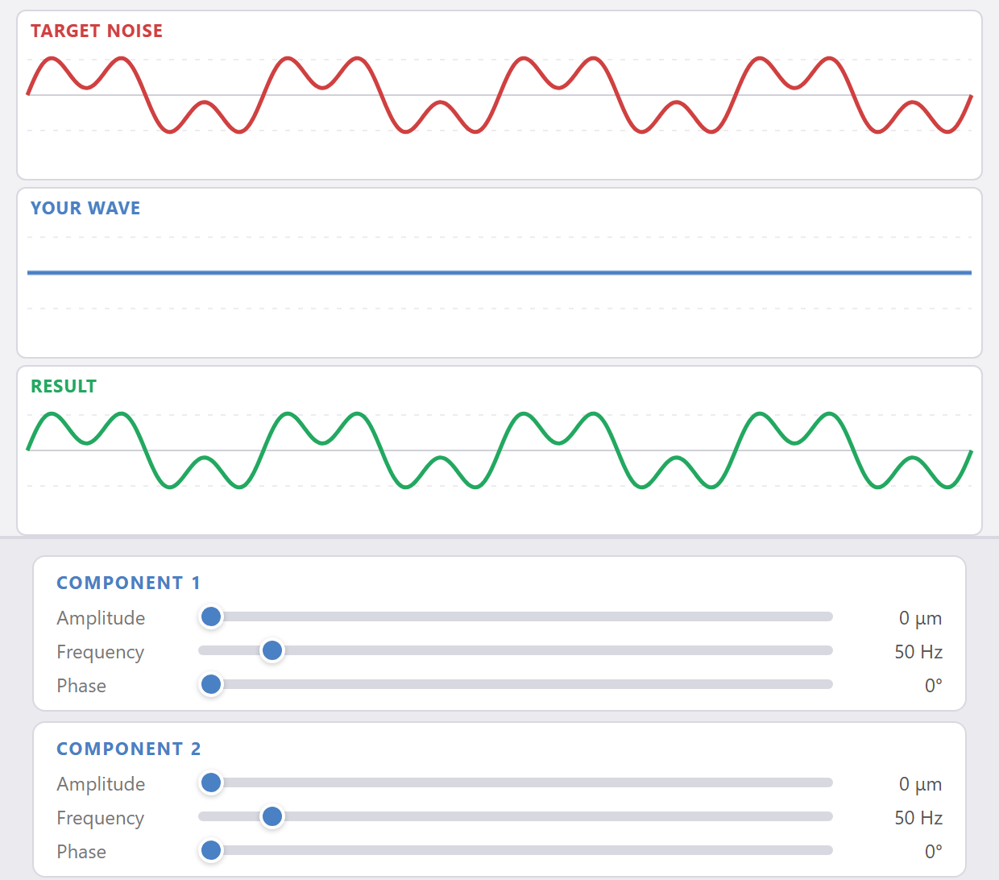

AoPS Physics
~1,000 students per year take our online physics courses:
- Middle School Physics 1 (light & waves)
- Introduction to Physics (physics skills for high school)
- Physics 1: Mechanics (AP Physics 1)
- F=ma Problem Series & PhysicsWOOT (olympiad prep)
- Relativity
~700 homework problem submissions per day. Most homework is graded automatically.
The Default Ask
Homework that grades itself usually presents a scenario and asks for one quantity. Such problems build mastery and tenacity — but a steady diet of them trains a narrow, procedural picture of what doing physics is: pick the equation, plug in, solve.
Rich Interaction, Simple Output
An auto-grader can check any answer with a well-defined key, not just numbers. Build the problems so students interact in different ways, depending on the thinking they're doing. Examples:
Connecting columns

Dragging pieces of equations

Clicking on an image

Adjusting graphs with sliders

Measuring g with an Atwood machine
You're measuring $g$ by releasing an Atwood machine and timing how long the heavier box takes to reach the floor. Which of these changes will reduce the experiment's uncertainty?

A peregrine falcon dives
A falcon dives from rest, approaching terminal velocity as air drag builds. Connect each plot to the quantity being plotted.

acceleration
Where does the pendulum stop?
A pendulum swings back and forth (left). A thin peg is suddenly inserted directly beneath the pivot (right). When the string hits the peg, the peg becomes the new pivot. Click on the point where the bob stops and turns around.
Which hypotheses are supported?
Galileo and Prof. Impetus share their hypotheses about falling objects: Galileo: All falling objects have the same downward acceleration. Impetus: Denser objects have greater downward acceleration. Objects of low enough density accelerate upward. Dr. Vacuum judges these hypotheses against observations — but she never accounts for the air. For each observation, check "G" if she'll say it agrees with Galileo's hypothesis, and "I" if she'll say it agrees with Impetus's. You can check both or neither.
| Observation | G | I |
|---|---|---|
| Big and small lead balls land together | ||
| Paper falls faster when crumpled tight | ||
| Helium balloons rise | ||
| Hammer and feather fall together on the Moon | ||
| A skydiver falls faster head-first |
What should each student try next?
Students are stuck on a classic puzzle:
Connect each student's statement to their most productive next step.
Build the wave that silences this one
The unwanted "Target Noise" below is the sum of two components. "Your Wave" also has two components: adjust each one's amplitude, frequency, and phase until the result cancels the noise. Then answer: the frequency of the higher-frequency component is how many times the frequency of the lower one?

Design Principles
- Foster conversations. Each question links to a discussion thread where classmates and TAs trade ideas before answering.
- Allow retries. Students can answer again if their first try isn't accepted.
- Invite feedback. Students can submit bug reports. We reply promptly.
- Accept ranges. Answer ranges make room for estimation, real measurements, and judgment calls.
- Anticipate and hint. When a student gives a common wrong answer, show a hint written for that answer. Review submissions to find answers that need new hints.
- Ask about someone else's thinking. Invite metacognition by having students analyze how another person was reasoning.
- Think in models. Students build new models, modify old ones, judge when they apply, and test them against data.
- Ask what happens. Pose questions that make sense outside the model used to answer them: "When? Where?" — not "What force? How much energy?"
- Many skills. Interpret data, choose what information is needed, decide whether expressions are equivalent, match representations, do dimensional analysis, read one term of an equation, estimate, decide what to model, make analogies…
What human graders are doing
Human feedback is a precious resource. We spend it where nuance pays most — often labs. In human-graded problems, students are:
Describing
- observations they made
- procedures they developed
- estimations they made
Justifying
- experimental design choices
- data analysis procedures
- a problem-solving path
Solving
- a multi-step problem
Drawing
- experimental setups
- data, graphs, and plots
Take it with you